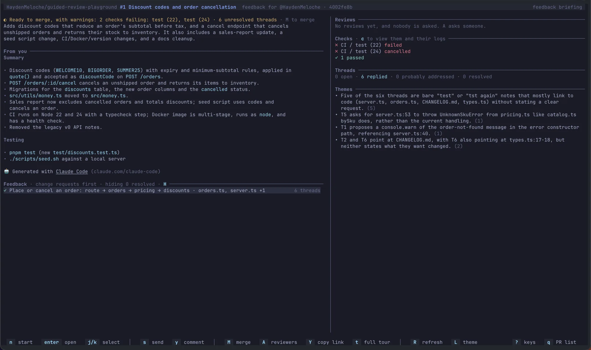
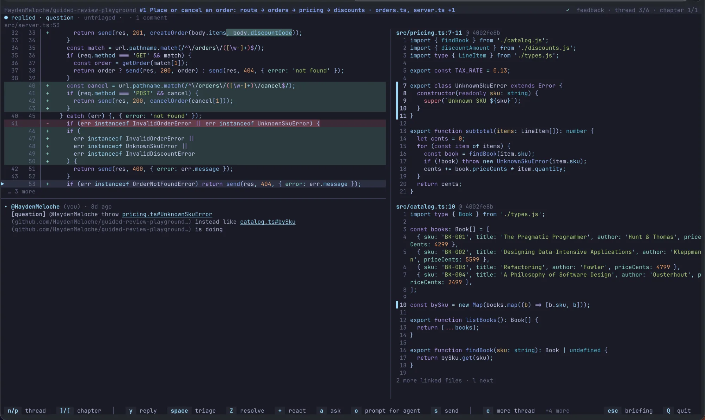

Using Guided Review
How to pick a PR, read a tour, comment, re-review, respond to a review on your own PR, merge, and preview your own branch. For setup, see Install and set up.
Moving around
Three keys move you back on every screen:
Esccloses the innermost open thing (a selection, a filter, a popup), or goes up one level. It never quits.qgoes up one level. On the PR list, and on the briefing ofgr preview, it quits.Qquits from anywhere, asking first if you have unposted drafts or queued replies. They stay saved either way.
? (or h) lists the current screen's keys; j/k scroll it. On the briefing and in a chapter, Tab turns to a page
explaining the marks. A key with no action on the current screen says so.
Pick a PR
gr opens the PR list. Review requests shows PRs waiting for your review, grouped by repository. Your PRs shows your own open PRs that need
you: unresolved threads, a new review, changes requested, ready to merge, or no reviewers requested. A line under them counts the rest, which wait on reviewers. Each row shows its state
and checks (✓ ready to merge, ✗ checks failing). On a wide terminal, a preview shows the description, files, checks, review decision, and whether a tour or drafts
already exist. The list refreshes every two minutes.
| Key | Action |
|---|---|
j / k, g / G |
Move, or jump to the first or last PR. |
Enter |
Open the tour, or on your own PR, its feedback. |
/ |
Filter by repo, title, author, or label. Esc clears the filter. |
l |
Tour your local changes, offered above the list while your branch differs from the default branch. Same as gr preview.
|
p / x |
Open, or dismiss, a PR link found on your clipboard. |
Space / a / d |
Select a PR, select all shown, and download the selected tours (or the highlighted one) to open later. |
w |
Show or hide your PRs that are waiting on review. |
M / c |
Merge the PR, or show its checks. |
A |
On your PR, see who is asked to review and ask more people. |
o |
Open the PR in a browser (over SSH, copy the link). |
r |
Refresh. |
L |
Choose a color theme. |
? / q |
List the keys, or quit. |
Guided Review checks out the PR head in a detached worktree under ~/.guided-review/worktrees/, so your own checkout is left alone. PRs from other repositories use a cached
clone under ~/.guided-review/repos/.
gr cleanup removes PR worktrees and deletes tours you have not opened in 90 days (--days <n> to change it). Unposted drafts, queued replies, and cached
clones are always kept. A lighter cleanup also runs on its own at most once a week.
Read the tour
The briefing opens first. It shows whether the PR can merge, a summary, the author's description, recent reviewer feedback, the chapters with your progress and a ▲ on
risky ones, flagged gaps under Watch for, and an overview diagram. Chapter narration may continue in the background (narrating 3/7).

| Key | Action |
|---|---|
n |
Start, or resume where you left off. |
j / k, Enter, 1–9 |
Select and open a chapter, or open one by number. |
f |
Cycle the order: Guided (recommended), Risk first, Small first, and File. |
r / d / V |
Read the full description, the overview diagram, or all submitted reviews. |
a |
Ask about the whole PR. |
D |
On a re-review, switch between changes only and the full review. |
M / c |
Merge, or show the checks. |
t |
On your own PR, switch to its feedback. |
s |
Open submit. |
: / L / ? / q |
Command palette, theme, keys, or back to the PR list. |
To read a PR again from the top, choose Restart the tour in the briefing's command palette (:). After you confirm, every hunk is unread and the saved place is
forgotten. Your drafts stay.
A chapter shows an explanation, the code hunk, risk and test status, review threads, and linked tests. From 110 columns the tests sit beside the code, and from 140 the
chapter list sits on the left. Generated, vendored, and mechanical changes start collapsed. Import-only changes form an optional chapter that n/p skip. Outdated
review threads are followed to where their lines are now.

Press a on a line or range to ask about it. The model can read the whole repository, so answers can cover code outside the diff, and they cite files and lines.
Chapters start at entry points such as routes, commands, and handlers, and follow changed code through calls matched by name. They are a reading suggestion, not proof of a call graph. When no entry point is found, the tour uses file order. TypeScript and JavaScript are analysed with the TypeScript compiler; Python, Go, Kotlin, C, C++, Java, Ruby, and Rust with tree-sitter.
Change-aware chapters
Some changes are easy to read but hard to judge from a diff. These get their own chapters after the rest, and with a model the explanation says what the change means:
| Chapter | The explanation covers |
|---|---|
| Database migrations | Locks and rewrites, possible data loss, rollback, backfills, and deploy order |
| API contracts (OpenAPI, protobuf, GraphQL, Avro) | Which changes break clients and which are additive, and the clients in the repo that rely on them |
| Dependencies and runtimes | name old → new with highlights between versions: features, breaking changes, security fixes. New packages get an overview |
| Infrastructure (Terraform, Kubernetes, Helm, and similar) | Resources created, destroyed, or replaced, and IAM, network, scaling, and secret changes |
| CI and workflows | New triggers, permissions, and secrets, and risky patterns such as pull_request_target or unpinned actions |
A manifest and its lockfile are read together: each dependency hunk lists the lockfile changes it caused, instead of the lockfile's own diff. A lockfile changed on its own gets a one-page summary.
The model has no internet access, so upgrade notes come from a changelog in the checkout when there is one, and are otherwise marked as inferred. To keep a file out of these chapters,
classify it with a kinds rule.
Chapter keys
The key bar shows the common keys. The rest are in the help (?) and the command palette (:).
| Key | Action |
|---|---|
n / p |
Next hunk (marking this one read), or previous. When other unread hunks in the file make the same change, marked ↻, n asks first: y reads
them all and goes past them, Enter reads just this one and steps through the rest without asking again. At the end of the tour, a summary card offers s to
submit.
|
j / k, J / K |
Move the cursor one line or ten. |
v |
Start or end a line range. |
N / P, ] / [ |
Next or previous chapter. |
c / C |
Comment on the line or range, or on the chapter. On your draft, c edits it. |
e |
Open the review threads on the line. Tab selects a comment, + reacts. |
y |
Reply to a thread on the line. Enter asks before posting; Ctrl+J adds a line. |
a |
Ask the model about the selection. Enter asks a follow-up; ↑/↓ scroll. |
Tab / Shift+Tab |
Move focus between the chapter list, explanation, code, and tests. |
t / T |
Focus the tests (or toggle to them when narrow), or hide the test pane. |
U |
Show or hide notes on possible test gaps. |
d |
Open the chapter diagram. b there opens it as SVG in your browser. |
r |
Toggle the raw unified diff. |
S |
Switch between inline and split view. |
+ / - |
Show more or fewer lines around the hunk. |
w |
Hide or show whitespace-only changes. |
I |
Show or fold the imports of a hunk that changes code too. They start folded to one row that counts the imports added and removed. |
x / z / u |
Mark the hunk skipped, deferred, or unread. |
m |
Move the hunk to another chapter. |
f |
Change the chapter order. |
D |
On a re-review, switch between changes only and the full review. |
R |
Rebuild the tour on a newer PR head. |
i |
Open the team checklist for this chapter. |
o |
Open your coding agent in the PR's checkout with this hunk as its prompt. |
b / s |
Back to the briefing, or open submit. |
\ |
Show or hide the chapter list. |
: |
Command palette: every action, chapter, and file. |
L |
Choose a color theme. |
? / h |
List the keys and marks. |
Esc / q / Q |
Back to the briefing, or quit. |
Moved code is marked with where its other half is, such as ↕ 7 lines moved from line 66.
Tests, risk, and review prompts
Tests are linked by coverage data, names, and file conventions. Only coverage marks a hunk tested; a name match marks it partial. New or changed test cases show their diff in the Tests
pane. Possible test gaps show as a line in the explanation; U expands them.
Risk scores flag changes to authentication, payments, migrations, public APIs, concurrency, and similar areas. The briefing may also flag likely missing migrations, changesets, docs, or translations. These are prompts to look, not verdicts. The model can raise a hunk's risk but never lower it, so a PR's text can't talk the tour out of a warning.
The agent pre-checks the team's checklist items; confirm each one with i. Confirmations stay local.
Draft and submit comments
Select a line or range and press c, or C for the whole chapter. Comments stay local drafts until you submit.
| Key | In the comment editor |
|---|---|
Tab / Shift+Tab |
Complete a suggestion, or cycle the label: blocking, question, suggestion, nit. |
Enter / Ctrl+J |
Save, or add a line (Shift+Enter too, where the terminal supports it). |
@ |
Mention someone, or reference code. |
Ctrl+T |
Have the model propose a code suggestion. |
Ctrl+O |
Write the comment in $EDITOR. |
Ctrl+G / Ctrl+D |
Write a GitHub code suggestion in $EDITOR, or remove it. |
Ctrl+X |
Delete the draft (press twice). |
Esc |
Close the innermost layer; with unsaved text, press again to discard. |
Reference code in a comment
Type @ and part of a name to insert a reference to a function, declaration, file, line range, or review thread, such as `releaseInventory()` or
`stock.ts:84-96`. When the review posts, each becomes a link to that code at the commit you reviewed, so it stays correct after new pushes.
People appear first, then code. On a code row, → opens a preview where j/k and v pick exact lines and Enter inserts them.
Filters narrow the list:
| Type | Lists |
|---|---|
@f: / @s: |
Files, or declarations. |
@callers: |
Possible callers of the commented code, matched by name. |
@tests: |
Tests linked to the commented change. |
@threads: |
Review threads on the PR. |
@recent: |
Places you visited this session. |
Typing the start of a filter name (@thr) offers it at the top of the list.
AI code suggestions
Ctrl+T asks the model for replacement code for the commented lines. Add an optional instruction and press Enter. The model sees the lines, the enclosing
declaration, linked tests, callers, and code you referenced. The proposal is marked not verified: it is checked for shape but never compiled or run. Enter or
a accepts it, r refines it, e edits it in $EDITOR, and Esc discards it. Suggestions only work on new lines within one hunk,
as on GitHub.
Submit
Press s to see your drafts grouped by label, with unread work and a suggested verdict.
| Key | Action |
|---|---|
e / x |
Edit or delete a draft. |
a / c / r |
Set the verdict: Approve, Comment, or Request changes. |
w |
Write a review summary. @ mentions someone. |
p |
Preview a draft as it will post. |
P |
Post every draft as one GitHub review, after you confirm. |
? |
List the keys. |
A draft whose line left the diff moves to the nearest line or the review body, and its row says so before you post.
Review after a new push
When the author pushes, a bar offers R to rebuild on the new head. Drafts and reading state carry over. The new tour starts in changes only mode, showing just
the hunks that changed since your last pass; D switches to the full review and back. The briefing also says whether the lines you commented on changed or your threads were
resolved.
Respond to a review
On your own PR, gr feedback (or gr feedback 1234, a URL, or owner/repo#1234) turns the review into a work list. Enter on a PR under
Your PRs opens it too. It uses an existing tour of the head, or builds a quick static one.
The feedback briefing
The left side shows the PR: whether it can merge, a summary, your description, and the feedback chapters. The right side shows the feedback: what changed since your last visit, each reviewer's verdict, the checks, thread counts, and with a model, themes that group related comments.


Threads are grouped by the code they're on, with change requests first. Probably addressed marks a thread whose lines your own commits changed after it was written, with no reviewer reply since. It's a prompt to check; gr never resolves a thread on its own.
| Key | Action |
|---|---|
n / Enter |
Start or resume, or open the selected chapter. |
s |
Open the send screen. |
y |
Comment on the PR. |
V / g / r |
Read the review summaries, the PR's general comments, or your full description. |
A |
Ask for reviews. |
c / M |
Checks, or merge. |
t |
Open the full tour; t in the tour comes back. |
Y |
Copy the PR's link. |
R |
Read the feedback again. |
Feedback keys
Each thread shows its code with the commented line marked, and the discussion. Files the comment links to, and code it names, show on the right at the commit the link names.


| Key | Action |
|---|---|
n / p, ] / [ |
Next or previous thread, or chapter. |
j / k, J / K |
Scroll the discussion. Tab selects a comment. |
y |
Write or edit a reply. Enter queues it, Ctrl+R marks the thread to resolve on send, Esc cancels. |
Ctrl+T |
In the reply editor, have the model draft a reply. |
Space |
Triage: 1 will do, 2 done, 3 won't do, 4 discuss. Triage stays local. |
Z |
Resolve or unresolve the thread now. |
+ |
React to the selected comment. |
a |
Ask the model about the thread. |
o |
Show a prompt to paste into your coding agent to make the fix. |
e |
Give the discussion or the code more room. |
l |
Show the next linked file. |
H |
Show or hide resolved threads. |
s / M / Y / L |
Send, merge, copy the link, or change the theme. |
R |
Read the feedback again, or rebuild after you push. Triage and replies are kept. |
b, q, Esc / Q |
Back to the feedback briefing, or quit. |
? / h |
List the keys. |
Send
The send screen lists your queued replies and comment, the threads they will resolve, and reviewers to ask again. Nothing reaches GitHub until you press P and confirm. Replies
post as one review, so each reviewer gets one notification. Threads resolve after their replies, then the ticked reviewers are re-requested.
j/k move, e edits, z toggles resolve, x deletes, r ticks a reviewer to re-request, and Esc goes
back. After a new push, P waits until R reads the feedback again.
Comment on the PR
A review summary has no thread to reply in. Press y on the feedback briefing to write a comment on the PR's conversation, optionally quoting a summary or comment (pick it
with j/k and Enter). @ completes names, Enter queues it, Shift+Enter adds a line, and
Esc cancels. It posts with your replies.
Ask for reviews
Press A on the feedback briefing or on your PR in the list to see who is asked to review. These act on GitHub at once:
a(orEnter) asks more people or@org/team, with completion.xwithdraws an unanswered request.rasks a reviewer to review again.
j/k select, and Esc closes.
Checks
Press c on the PR list or a briefing to see the head's checks, failures first, with duration and whether each is required. Only each check's latest run counts. Running
checks refresh every 20 seconds; R refreshes now, and ? lists the keys.
Enter on a GitHub Actions job opens its log at the first error. j/k scroll, d/u move half a page (PgDn/PgUp
a whole one), g/G go to the top or end, n/N jump between errors, and Esc goes back. For other checks,
Enter opens their page in the browser; o opens any check's page.
Merge a PR
Press M on the PR list, a briefing, or in the feedback. The dialog shows whether GitHub will let the PR merge and what blocks it. You need write access.
| Key | Action |
|---|---|
m |
Choose squash, merge commit, or rebase, from what the repository allows. |
e / b |
Edit the commit title or body. With a model, the message is drafted for you. |
g / x |
Draft the message again, or stop drafting and use GitHub's default. |
d |
Delete the branch after merging. |
u |
Update a branch that is behind its base: Enter merges the base in, r rebases. |
r |
Mark a draft PR ready for review. |
P |
Merge, after you confirm. |
? |
List the keys. |
The merge names the head commit you saw, so GitHub refuses it if someone pushed in the meantime.
Preview your own branch
gr preview (or l on the PR list) tours your branch before you open a PR, uncommitted changes included, against its merge base with the default branch. Commit
messages stand in for the description. It works without gh.
If the tour includes changes that aren't yours, your copy of the default branch is out of date: run git fetch and try again.
Commands and options
gr # choose from PRs awaiting your review
gr review 1234 # PR number in the current repository
gr review https://github.com/owner/repo/pull/1234
gr review owner/repo#1234
gr review # current branch's open PR
gr feedback # work through the review on your own PR
gr preview # tour the current branch before opening a PR
gr open 1234 # open a tour in a new tmux or Terminal window
gr open --preview # open gr preview in a new tmux or Terminal window
gr build 1234 --comment # build a tour without the TUI and post it to the PR (for CI)
gr config # set up or change the model, GitHub access, and theme
gr cleanup # remove managed worktrees and prune old tours
| Option | Purpose |
|---|---|
--no-agent |
Build the tour from static analysis only, with no model calls. |
--fresh |
Rebuild the tour even if one is cached or shared on the PR. |
--comment |
With build, post the tour to the PR. See Share tours from CI. |
--out <file> |
With build, write the tour JSON to a file, or - for stdout. |
--preview |
With open, open gr preview instead of a PR. |
--days <n> |
With cleanup, delete tours not opened in this many days (default 90). |
--force |
With install-claude-command or install-codex-skill, replace an existing file. |
Models and keys live in the config file, not in options; see Configuration. GR_DEBUG=1 prints stack traces, and
GR_DEBUG_MODEL logs model calls (see Debugging model calls). gr checks npm for updates once a day and
offers them before a tour; GR_NO_UPDATE_CHECK=1 turns that off. For terminal support and tmux settings, see Terminals.
Use from Claude Code or Codex
-
Claude Code:
gr install-claude-commandadds a/guided-reviewcommand that opensgr previewof your local changes in a new tmux or Terminal window. - Codex:
gr install-codex-skilladds aguided-reviewskill that does the same. Restart Codex afterwards.
Both stop rather than overwrite a file you've changed; pass --force to replace it.